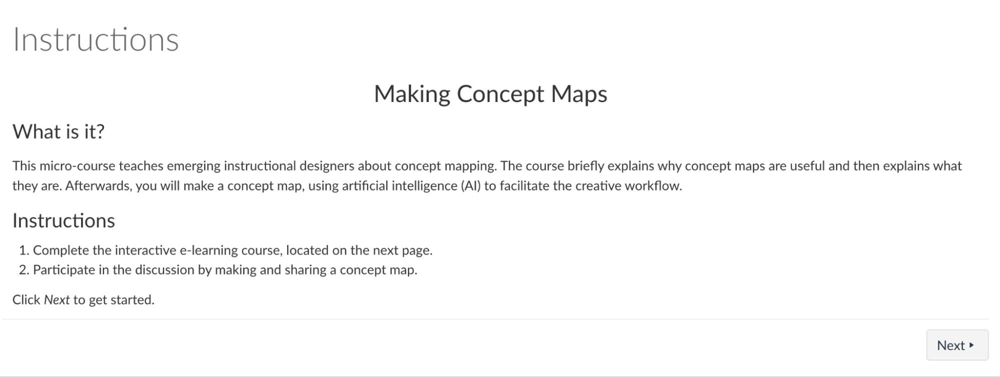
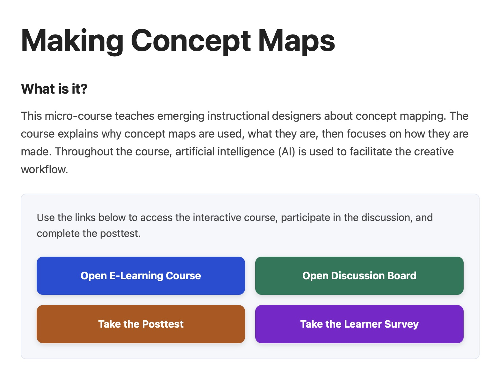
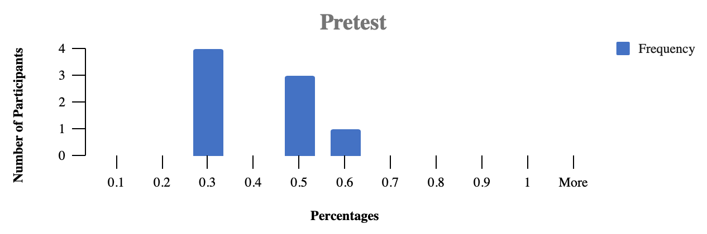
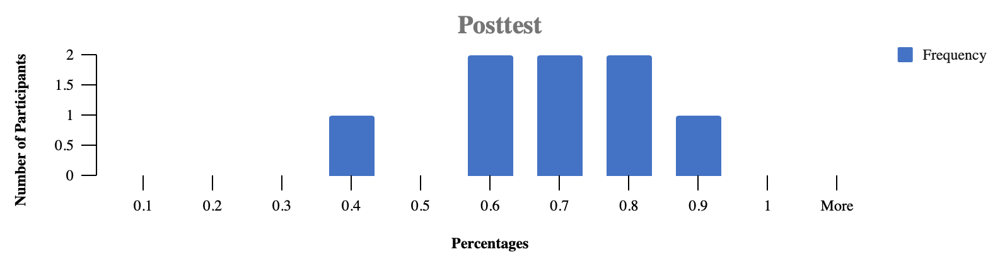
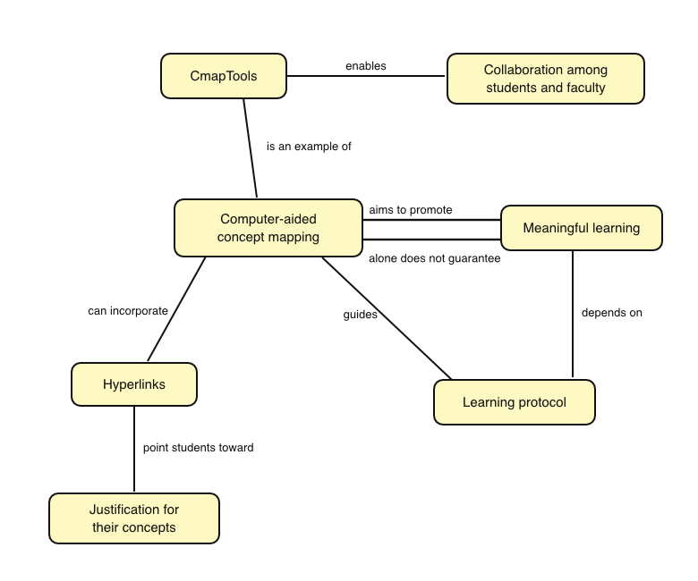
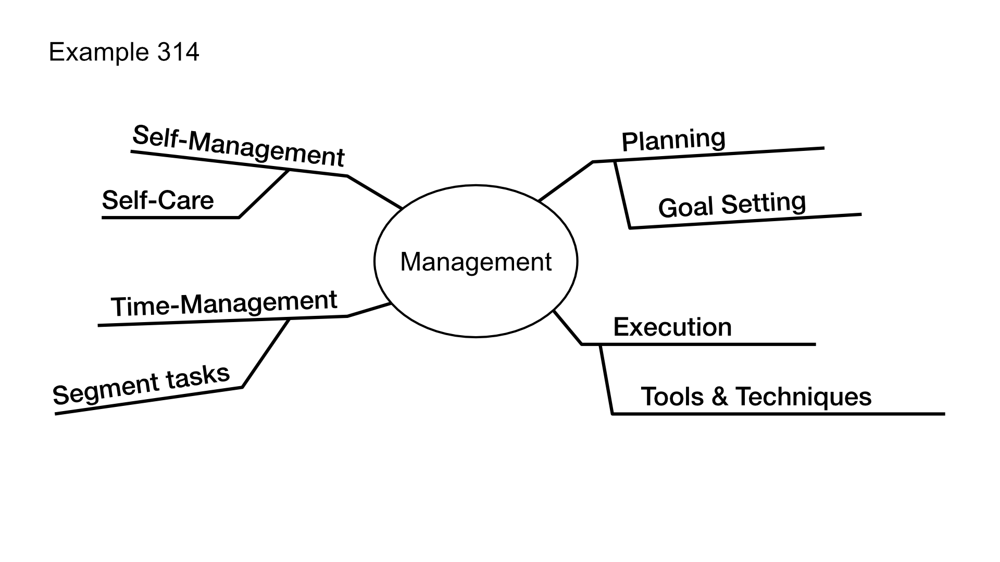

By Noah Kevy & Mariel Viola
Introduction
An e-learning product named “Making Concept Maps” was evaluated. It is best described as a micro-course that introduced concept mapping, then guided students through the process of making a concept map. To view a version of the course, self-enroll in Canvas using this link. The course, the prototype, had one terminal learning objective and several enabling objectives. This evaluation did not measure achievement of the terminal objective. Tests only measured the degree to which participants achieved the first four enabling objectives.
The Prototype
The terminal learning objective of “Making Concept Maps” was the following. Given a prompt, graduate students will be able to perform the skill of concept mapping, creating a concept map with 6 to 7 concepts and at least 6 propositions.
There were five enabling objectives:
- Given a graphic or diagram, graduate students will be able to determine if it is a concept map.
- Graduate students will be able to identify the component parts of a concept map, identifying essential components and variable components.
- Given a text, graduate students will be able to perform the procedure of concept generation, listing between 3 and 9 distinct concepts.
- Given a list of concepts, graduate students will be able to construct a proposition.
- Given a list of propositions, graduate students will be able to draw a concept map.
The prototype was delivered asynchronously and online. It was hosted in a Canvas course and on a webpage served by Netlify. During the evaluation, some participants were unable to enroll in the Canvas course.
The prototype had five parts: 1. Introduction 2. A classification activity 3. Concept generation 4. Proposition construction, and 5. Concept map generation. Initially, students encountered learning outcomes and a rationale. Then students engaged with the material. For example, they discriminated between examples (of concept maps) and non-examples. In parts 3, 4 and 5, GAI was conceptualized as a knowledgeable other and utilized to scaffold a creative workflow. Instructions were provided, along with prompts.
Articulate Rise360 was used to write the micro-course in a long scroll format. Each part was written in a section, with an additional section used to provide acknowledgment, author information, and optional further reading. The prototype strove to overcome common barriers to learning. To facilitate cognitive processing, it leveraged multimedia design principles. And the materials were sequenced according to perceived difficulty.


The prototype has both strengths and weaknesses. As has been mentioned, some participants could not log in to Canvas. An alternative landing page was developed (Figure 2). A discussion activity allowed students to share their work. However, students were required to switch tabs, between this and the micro-course. Still, sharing with peers helps students recognize best practices and pitfalls. The strength of the design lay in its many interactive activities. Much of the instruction was immediately followed by interaction. Primarily, multiple choice questions were used. Graphics were used throughout to signal important information and provide additional opportunities for germane processing.
Methodology
Test Methods
Learning and the reactions of the participants were evaluated using three surveys. Usability was evaluated by reviewing data from one survey alongside notes taken during the direct observations of three participants. In total, eight individuals voluntarily participated.
Target Audience
All the participants were potential members of the target audience. That is, each participant had some professional knowledge or interest in teaching and learning. Five members of the sample population were graduate students enrolled in the Master of Science in Instructional Science and Technology program. Two were professional educators. And one was a tennis coach. The target population is graduate students who will enroll in Instructional Technology at California State University Monterey Bay in Fall 2026.
Procedure
Assessment of learning was done by testing participants on their knowledge of concept mapping before and after taking the course. Again, this pretest–posttest design did not measure the terminal objective. However, two participants did create concept maps (Figure 6). The pretest was administered one day before the course; the posttest and learner survey were administered immediately after the course.
Usability testing was conducted through direct observation of three participants. Evaluators asked the participants to talk aloud while working through the micro-course. Notes were guided by an observation checklist. In addition, evaluators wrote notes into an empathy map, describing what participants did, felt, said, and thought about the experience. Also, evaluators completed an accessibility checklist to ensure the prototype could be implemented in an educational setting. Common problems or barriers were reviewed.
Instruments
Three test instruments were designed. The pre/posttests contained ten questions each (Appendix A). To evaluate reaction, the participants completed a nine-question learner survey (Appendix B). The accessibility checklist contains a short list of common problems (Appendix C). The usability checklist contained fourteen action items and an empathy map (Appendix D).
Results
The pretest–posttest design was intended to show learning. The null hypothesis was formulated accordingly:
The average performance of the students would not change from pretest to posttest.
This meant that any differences between the scores were simply due to chance and were not statistically significant. In contrast, the alternative hypothesis predicted improvement, thus stating that:
The average performance of the students on the posttest would be greater than the average performance of the students on the pretest.
This meant that students would learn and retain information about concept mapping during the training. To formally notate these hypotheses, the following has been provided:
H0: µPre = µPost
H1: µPre < µPost
After collecting the data from the pretest, the scores yielded an arithmetic mean of 0.37, and a standard deviation of 0.15. The mean (0.37) ended up being slightly lower than the median (0.375). As displayed in the chart below, students’ scores predominantly lay below fifty percent.

The posttest, on the other hand, yielded an average of 0.65, nearly double that of the pretest mean, with a standard deviation of 0.16. The posttest mean (0.65) is close to the median of 0.67. Furthermore, the posttest scores lay largely in the middle and upper half of the possible scores, with one potential outlier.

Once the data was organized, the evaluators computed a paired t-test using Excel, and found improvement. The average performance of students on the pretest (X̅=0.37, SD=0.15) and the average performance on the posttest (X̅=0.65, SD=0.16) differ significantly. From these results, we can conclude that the participants did, in fact, learn about concept mapping by engaging with the prototype. By doing so, their scores on the posttest increased (p < 0.05, df=7). Since the data yielded statistically significant results, the effect size was calculated. The effect size for this finding is large (d=1.83). We can therefore reject the null hypothesis and infer that if this design was implemented for more students, it would be an effective means of teaching students about concept mapping.
Usability testing revealed that participants who were observed interacted with the module as expected. Based on observations, the user interface of the learning module was straightforward and easy to navigate. However, the initial design of the prototype was too long; as a result, not all of the participants were able to complete the prototype. Several participants displayed some hesitancy, and asked aloud if they needed to complete the discussions. Among the participants, there were varying levels of proficiency with AI. One participant did not already have an account, so they created one.
Question | Answers for Six Participants | |
|---|---|---|
Since taking the pretest, did you do any research on concept mapping? This excludes taking the micro-course. | 83.3% No | 16.7% Yes |
If you were asked to make a concept map, would you feel prepared to do so? | 66.7% I feel very prepared. | 33.3% I feel somewhat prepared |
In your opinion, are concept maps useful for learning? | 50% Concept maps are very useful for learning. | 50% Concept maps are useful for learning. |
How likely are you to use concept mapping in instructional design? | 66.7% Yes, I will use concept mapping in my instructional designs. | 33.3% Maybe, I’m undecided. |
Which generative artificial intelligence platform did you use to create your concept maps? | 33.3% ChatGPT | 66.7% Claude |
How would you rate the clarity of the instructions? | 66.7% The instructions were clear. | 33.3% The instructions were very clear. |
How would you rate the course navigation? | 50% Navigating the course was easy. | 50% Navigating the course was very easy. |
Do you think making concept maps with generative artificial intelligence (GAI) is easy? | 16.7% It was very easy to use GAI for concept mapping | 83.3% It was easy to use GAI for concept mapping. |
After engaging with the prototype, participants were asked to fill out a learner survey. While more than half of the participants felt prepared to make a concept map on their own, a third of the participants only felt somewhat prepared. Despite this feedback, all participants who completed the survey had positive opinions about the usefulness of concept maps. Regarding the design of the prototype itself, all survey participants noted that the instructions of the course were clear and navigating the course was either easy or very easy. In addition to this, none of the participants felt it was difficult to use generative AI for concept mapping.
The prototype was accessible. Its keyboard navigation works, images have alternative text, and the lesson is readable. The job-aid or handout, a PDF, was less accessible. Its text was clear, but a screen reader would not be able to interpret its graphic elements.
Recommendations
The prototype was effective, but there is room for improvement. Only two of the eight participants completed the course. Further development should begin by separating the procedural and declarative knowledge. The beginning of the course, which the learners liked, contained most but not all of the declarative knowledge required for concept mapping. To make the course shorter and easier to complete, all of the procedural knowledge will be moved to the textbox above the Canvas discussion forum. The Rise360 product will only be used to present declarative knowledge.

The course should further support identification and analysis of concept maps. Learners were told that concept maps can vary by size, color, and in how interconnected they are. Despite this, learners performed poorly on questions that assessed their knowledge of variable attributes. The language explaining this concept should be revised. Additional activities should elaborate on essential and variable attributes, and the table of these attributes should be presented twice. At least three additional multiple-choice questions should prompt learners to think about size and connectedness.
While other recommendations could be made, the two mentioned here are of the highest priority. The prototype is effective and four learners reported that they would make concept maps in the future; as such, the lesson style and approach should be maintained.
Summary
The e-learning product “Making Concept Maps” was evaluated by conducting a usability and learning effectiveness test. Based on the data collected from these tests, the prototype returned both statistically significant and practically significant results. Voluntary participants developed their understanding of concept maps and displayed their ability to generate concept maps with AI. Although observations uncovered areas for further development, the prototype has already been proven to produce positive learning outcomes for students.
Appendix A
Pretest/Posttest
Google Forms were used to administer the pretest and posttest. You may view the actual pretest and posttest online. Below, correct answers are marked with an asterisk.
Introduction
Survey on Making Concept Maps
The purpose of this questionnaire is to discover what learners know or do not know about concept maps and concept mapping. You are not expected to know the answers to these questions. Please answer the questions from memory to the best of your ability.
Question 1: In the last month, have you searched for (or looked up) any information about concept maps? (Pretest only; 0 points.)
- Yes
- No
Question 2: Select all of the essential attributes of a concept map from this list. You may select multiple answers. (5 points each correct, 15 points total)
- Color (e.g. white, yellow, or light blue)
- Connectedness (e.g. the number of lines and relationships)
- Decorations (e.g. icons, illustrations or photographs)
- Grid lines that create cells (e.g. a table or spreadsheet)
- Lines that connect shapes (e.g. A → B) *
- Meaningful content (e.g. an important topic)
- Relationships that label lines (e.g. A –is next to→ B) *
- Shapes that contain words (e.g. squares or ellipses) *
- Size (e.g. the number of shapes with words)
- Structure (e.g. what the diagram looks like)
- Weights (e.g. a number signifying cost or importance)
Question 3: Select all of the variable attributes of a concept map from this list. You may select multiple answers. (3 points each, 15 points total)
- Color (e.g. white, yellow, or light blue) *
- Connectedness (e.g. the number of lines and relationships) *
- Decorations (e.g. icons, illustrations or photographs)
- Grid lines that create cells (e.g. a table or spreadsheet)
- Lines that connect shapes (e.g. A → B)
- Meaningful content (e.g. an important topic) *
- Relationships that label lines (e.g. A –is next to→ B)
- Shapes that contain words (e.g. squares or ellipses)
- Size (e.g. the number of shapes with words) *
- Structure (e.g. what the diagram looks like) *
- Weights (e.g. a number signifying cost or importance)
Question 4: Is example 331 a concept map? (10 points.)

- It isn't a concept map *
- It is a concept map
- Not sure
Question 5: Is example 116 a concept map? (10 points.)

- It isn't a concept map *
- It is a concept map
- Not sure
Question 6: Is example 314 a concept map? (10 points.)

- It is a concept map
- It isn’t a concept map *
- Not sure
Question 7: Please select the list of words that most closely relates to the following statement. She felt acceleration. (15 points; Associations from Nelson, McEvoy, & Schreiber, 1988)
- Cards, Expert, Bandage, Spades, Hole, King, Tennis
- Fast, Speed, Car, Gas, Increase, Slow, Race *
- Movement, Reaction, Movie, Motion, Adventure, Run, Verb
- Bag, Potato, Bed, Flower, Pouch, Cloth, Groceries
Question 8: Please select the list of words that most closely relates to the following statement.
It tastes ok. (15 points; Associations from Nelson, McEvoy, & Schreiber, 1988)
- Coffee, Bag, Ice, Drink, Cup, Leaves, Hot
- Freeze, Melt, Defrost, Ice, Frozen, Meat, Out
- Wheat, Sand, Corn, Rice, Salt, Food, Alcohol
- Food, Smell, Eat, Good, Sweet, Tongue, Sour *
Question 9: Please select the proposition that can be constructed using two of the concepts in this list. Olive oil, Smoke point, Convection Ovens. (15 points; Associations from Nelson, McEvoy, & Schreiber, 1988)
- What is the smoke point of olive oil?
- Both a convection oven and olive oil might be found in the kitchen.
- Set the oven to 450 degrees.
- Olive oil has a smoke point. *
- Don't burn the olive oil in the convection oven.
Question 10: Please select the proposition that can be constructed using two of the concepts in this list. Ballet, Ballerina, Elegance. (15 points; Associations from Nelson, McEvoy, & Schreiber, 1988)
- It is truly the most elegant ballet.
- The ballerina will perform at the ballet. *
- The clumsy ballerina was kicked out of ballet practice.
- Being a ballerina requires hundreds of hours of training.
- How did the ballerina achieve such elegance?
Appendix B
Learner Survey
A Google Form was used to administer the learner survey. You may view the actual survey online.
Introduction
Survey on Making Concept Maps for IST 622
The purpose of this questionnaire is to understand a student’s experience of the micro-course named “Making Concept Maps.” This is not a test. Rather, what we need is your honest opinion. Please answer all of the questions to the best of your ability.
If you have any questions or concerns, you may email Noah Kevy at nkevy@csumb.edu, and we’ll respond as soon as we can.
Question 1: Since taking the pretest, did you do any research on concept mapping? This excludes taking the micro-course.
- Yes
- No
Question 2: If you were asked to make a concept map, would you feel prepared to do so?
- I feel very prepared.
- I feel somewhat prepared.
- I feel a little prepared.
- I do not feel prepared.
- I feel very unprepared.
Question 3: In your opinion, are concept maps useful for learning?
- Concept maps are very useful for learning.
- Concept maps are useful for learning.
- I haven’t decided if I think concept maps are useful.
- Concept maps are not useful for learning.
- Concept maps are not at all useful for learning.
Question 4: How likely are you to use concept mapping in instructional design?
- No, I will not use concept mapping in my instructional designs.
- Maybe, I’m undecided.
- Yes, I will use concept mapping in my instructional designs.
Question 5: How would you rate the clarity of the instructions?
- The instructions were very clear.
- The instructions were clear.
- The instructions were not clear.
- The instructions were not clear at all.
- Other _________
Question 6: Which generative artificial intelligence platform did you use to create your concept maps?
- Short answer.
Question 7: Do you think making concept maps with generative artificial intelligence (GAI) is easy?
- It was very difficult to use GAI for concept mapping.
- It was difficult to use GAI for concept mapping.
- It was easy to use GAI for concept mapping.
- It was very easy to use GAI for concept mapping.
- Other ___
Question 8: How would you rate the course navigation?
- Navigating the course was very easy.
- Navigating the course was easy.
- Navigating the course was ok.
- Navigating the course was not easy.
- Navigating the course was not at all easy.
Question 9: If there is anything else that you want to share, we’d love to know. You can share it here.
Appendix C
Accessibility Checklist
The following checks are performed by the evaluators, not test subjects, in order to identify common barriers to access in digital learning materials.
- Alt text. Check all images for alternative text. Add alternative text as necessary.
- Captions. All videos require captions; all audio requires a transcript. Add captions or text as necessary.
- Color Codes. Do not use color codes without additional symbolic representations. If color codes are used, add symbols or icons.
- Color Contrast. Check the entire training or course, ensuring that text is easy to read, and symbols are clear or intelligible. Change colors as necessary.
- Headings. If appropriate, the training or course should make use of heading levels one, two and three, to segment text or introduce new ideas. Add headings as necessary.
- Keyboard Navigation. The training or course should allow users to navigate using only their keyboard. This is especially important for interactive elements. Replace elements that do not support keyboard navigation, or prepare an alternative solution.
- Labels. All input boxes or form fields have labels, explaining what the input is for. Add labels as necessary.
- Links. All links should present with meaningful descriptions, and uniform resource locators should be hidden. Also, links should be standardized; use a blue color with an underline. Replace the link text as necessary.
- Plain language. Throughout the training or course, the language used caters to the expectations of the target audience. Edit as necessary.
- Tables. Ensure that tables include a caption, appropriate table headings, and the scopes of column and row headings are set. Remediate tables as necessary. Do not use tables to create a page layout.
- Timeouts. Ensure that all pages or activities remain responsive for a reasonable amount of time. Redesign activities that time out too soon. If this is not possible provide a warning and an appropriate recourse (such as saving to resume work later).
Appendix D
Usability Test Instrument
Module | Start Time | End Time |
|---|---|---|
Making Concept Maps | ||
Where did the participant stop? |
Participant Name:
Observability Checklist
Categories | Notes |
|---|---|
Opens e-learning course | |
Starts the e-learning module | |
Listens to audio in “Welcome” | |
Skips Learning Outcomes | |
Uses the left-hand navigation | |
Engages with interactive elements | |
Answers questions within two attempts | |
Downloads and looks at the handout | |
Copies and pastes the prompts into an AI | |
Uploads the example as an attachment | |
Navigates to the discussion | |
Posts in the discussion | |
Watches the video on propositions |